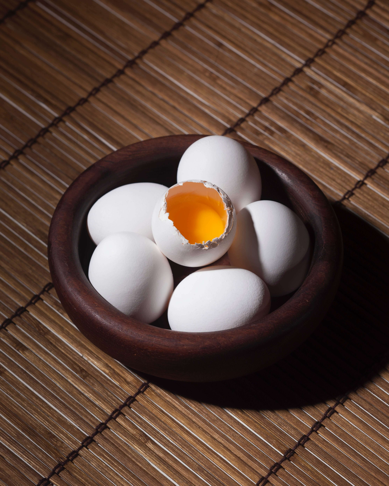

Week 6
Protein
Protein serves two main purposes in our bodies. It is essential for the growth and maintenance of the body, and any left-over protein will be used as an energy source. Protein is made up of amino acids and your body needs 20 different types, to build and maintain all the crazy enzyme’s, hormones, tissues and muscles in our bodies. However, 9 of these the body cannot produce from other amino acids and we must have them in our diet (these are known as Essential Amino Acids).
Because proteins are used for such a variety of purposes our daily requirements change drastically throughout life or even day to day depending on our activity level. To get the essential amino in your diet it’s important you eat protein from a variety of different sources, in order to get the different amino acids your body needs.
Food Sources
- Milk (all types)
- Eggs
- Meat
- Poultry
- Fish
- Almonds
- Beans all contain a high percentage of protein.
If you’re struggling to get enough variety of amino acids into your diet particularly if you’re vegan, vegetarian, lactose intolerant or a picky eater amino acids can be brought in a supplement store.
If you have a good variety of sources of protein but are struggling to reach your daily target, then whey protein powder is a simple way to get more protein in your diet. It usually is added to drinks with milk or water and is particularly useful for people trying to maintain muscle mass while trying to reduce fat.

Follow the link below to find these product’s that I recommend
- Pro Supps amino
- Balance 100% Whey
Use the promo code: 1stfootforward to receive 5% off.
Protein and Weight loss.
By altering the amounts of Fats and Carbohydrates in our diets is the usual suggested way to lose weight. However, by increasing the relative amounts of protein in our diets can help with weight loss in the following ways:
- It helps maintain muscle mass. Except in extraordinary circumstances, a dieter may lose a kg a week. We want to ensure that it is fat and not a muscle we are losing. A higher muscle mass results in our body naturally burning more calories a day.
- Protein is filling. Protein makes us feel full and gives us a nice dopamine release, this can help reduce cravings for less healthy food options. In particular a high protein, high fiber meal is incredibly fulling. Helping us feel satisfied for hours.
- Protein is yummy. Most of my clients have no trouble finding a variety of protein sources they absolutely love and would usually prefer to eat high protein.
- Protein helps keep you active. Not only does protein contain the amino acids your muscles need to work and grow, protein is also vital in preventing and repairing any injuries, sprains, and tears. For these reasons hitting your daily protein goal should be your main priority after keeping your total calories down.
- Proteins Everyday. Try to have some protein with every meal and make protein the main source of calories in your largest meal.
- Try to include protein from at least two of these sources every week red meat, white meat, fish.
- Try to include protein from at least two of these sources every day: dairy, eggs, yoghurt, soy, grains (quinoa, oats, barley, etc.) and nuts and pulses (dried beans, peas, and lentils).